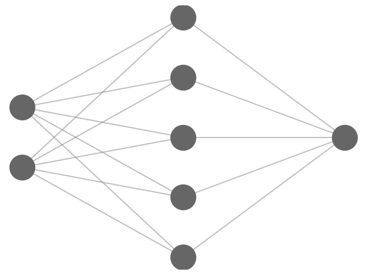
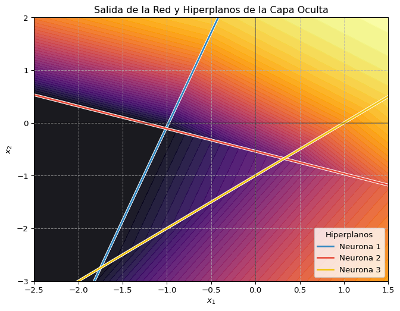
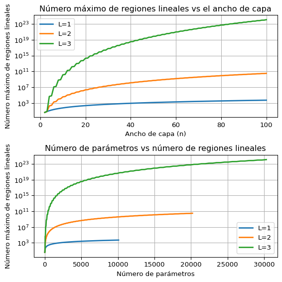

El perceptrón, redes completamente conexas y pérdidas
Introducción
Arquitecturas importantes
Cada una de estas arquitecturas responde a una estructura de datos o problema específico, y se han vuelto herramientas clave en física computacional:
- Redes completamente conectadas (MLPs): consisten en capas de neuronas donde cada una está conectada a todas las de la capa anterior. Son adecuadas para datos tabulares o de baja dimensión. Se utilizan para aproximación de funciones, regresión y clasificación simple. Son la base de muchas otras arquitecturas más complejas.
- Redes convolucionales: se basan en aplicar filtros (kernels) que exploran estructuras locales en los datos. Son especializadas en datos espaciales como imágenes. Son comunes en reconocimiento de patrones y análisis de mapas de temperatura o distribución de materia en cosmología.
- Redes recurrentes y variantes: incorporan ciclos en su arquitectura para mantener una memoria de estados anteriores. Se usan para procesamiento secuencial y temporal. Útiles para series temporales físicas, como evolución temporal de sistemas o señales en experimentos.
- Redes residuales y profundas: introducen conexiones identitarias (skip connections) que permiten pasar información sin alteración a capas posteriores. Facilitan el entrenamiento de redes muy profundas al evitar el problema del desvanecimiento del gradiente. Son utilizadas en física para modelos predictivos muy complejos con datos jerárquicos o multiescalares.
- Transformadores: utilizan mecanismos de atención que asignan pesos a diferentes partes de la entrada según su relevancia contextual. Son la arquitectura dominante para datos secuenciales, procesamiento de lenguaje y más allá. Recientemente aplicados en física para modelar correlaciones de largo alcance y aprendizaje de representaciones de sistemas físicos.
Aplicaciones a la física
Cada una de las siguientes áreas ha sido impulsada recientemente por el uso de redes neuronales, en muchos casos superando métodos tradicionales:
- Predicción de parámetros cosmológicos a partir de mapas del cielo: redes profundas permiten inferir parámetros fundamentales del modelo cosmológico a partir de datos como el fondo cósmico de microondas o mapas de lentes gravitacionales.
- Reconstrucción de dinámica de fluidos mediante operadores neuronales: los operadores neuronales permiten modelar sistemas complejos como turbulencia sin resolver explícitamente todas las escalas del sistema.
- Reducción de ruido en datos experimentales (e.g., espectros): redes autoencoder y convolucionales permiten eliminar ruido instrumental y mejorar la calidad de señales físicas.
- Resolución de EDPs en geometrías complejas: métodos como PINNs (Physics-Informed Neural Networks) resuelven ecuaciones diferenciales directamente en dominios arbitrarios, incluyendo condiciones de frontera no triviales.
El Perceptrón y Redes Neuronales Superficiales
Ahora introducimos el perceptrón como bloque fundamental y extendemos la idea a redes neuronales superficiales (con una capa oculta).
El Perceptrón: Definición y Clasificación Lineal
El perceptrón, es un algoritmo para clasificación binaria supervisada. Calcula una salida \(z\) como una combinación lineal de las entradas \(\mathbf{x} \in \mathbb{R}^d\), más un sesgo \(b\):
\[ z = \mathbf{w}^T \mathbf{x} + b = \sum_{i=1}^d w_i x_i + b\,, \]
donde \(\mathbf{w} \in \mathbb{R}^d\) es el vector de pesos y \(b \in \mathbb{R}\) es el sesgo.
Luego, aplica una función de activación no lineal. Originalmente, se usaba la función escalón (o Heaviside) \(\phi(z) = 1\) si \(z \geq 0\) y \(\phi(z) = 0\) si \(z < 0\). Entonces la salida del perceptrón es \(\hat{y} = \phi(z)\).
La ecuación \(\mathbf{w}^T \mathbf{x} + b = 0\) define un hiperplano en el espacio de entrada \(\mathbb{R}^d\). Este hiperplano divide el espacio en dos semiespacios, correspondiendo a las dos clases. Por lo tanto, el perceptrón original es un clasificador lineal y solo puede separar datos que sean linealmente separables.
Gráficamente, dibujamos el perceptrón como teniendo \(d\) líneas, una por cada entrada, y un sesgo, y una línea de salida.
Las redes neuronales modernas utilizan funciones de activación diferenciables (casi en todas partes). Una de las más populares es la Unidad Lineal Rectificada (ReLU):
\[ \phi_{\text{ReLU}}(z) = \max(0, z) = \begin{cases} z, & \text{si } z > 0\\ 0, & \text{si } z \le 0 \end{cases}\,. \]
- Si solo se usaran transformaciones lineales (sin activación no lineal o con activación identidad), una red de múltiples capas colapsaría en una única transformación lineal equivalente: \(y = W_{\text{eff}}^T\mathbf{x} + b_{\text{eff}}\). La no linealidad es esencial para la capacidad expresiva de las redes profundas, como veremos más adelante.
- La ReLU, a pesar de su simplicidad, introduce “quiebres” (puntos no diferenciables en \(z=0\)) que permiten a las redes neuronales construir funciones lineales a trozos (piecewise-linear) muy complejas.
- Cada neurona con activación ReLU divide el espacio de entrada según el hiperplano \(\mathbf{w}^T \mathbf{x} + b = 0\): en una región la neurona está “activa” (salida \(> 0\)) y en la otra está “inactiva” (salida \(= 0\)).
Nota: Otras activaciones comunes incluyen la sigmoide y la tangente hiperbólica (tanh), aunque ReLU y sus variantes son a menudo preferidas en redes profundas.
Redes con Una Capa Oculta
Combinando múltiples neuronas (usualmente con activaciones como ReLU) en una “capa oculta”, podemos construir redes más potentes. Una red neuronal superficial (shallow network) con una capa oculta de \(H\) neuronas y una capa de salida con una única neurona (para regresión o clasificación binaria) calcula:
\[ \hat{y}(\mathbf{x}) = \mathbf{W}_{(2)}^T \phi(\mathbf{W}_{(1)}\mathbf{x} + \mathbf{b}_{(1)}) + b_{(2)}\,, \]
donde: - \(\mathbf{W}_{(1)} \in \mathbb{R}^{H \times d}\) y \(\mathbf{b}_{(1)} \in \mathbb{R}^H\) son los pesos y sesgos de la capa oculta. - \(\phi\) es la función de activación (e.g., ReLU), aplicada elemento a elemento. - \(\mathbf{W}_{(2)} \in \mathbb{R}^H\) y \(b_{(2)} \in \mathbb{R}\) son los pesos y el sesgo de la capa de salida.
Gráficamente, representamos esta red como un conjunto de \(H\) perceptrones, donde cada uno tiene \(d\) líneas, una por cada entrada, un sesgo, y una línea de salida. Esas \(H\) salidas van todas a un único perceptrón de salida, que tiene \(m\) conexiones de entrada y \(1\) conexión de salida.
Esta red divide el espacio de entrada \(\mathbb{R}^d\) en múltiples regiones poliédricas convexas. Dentro de cada región, la función \(\hat{y}(\mathbf{x})\) se comporta como una función afín (lineal más una constante). Los límites entre estas regiones están determinados por los hiperplanos \(\mathbf{w}_i^{(1)} \cdot \mathbf{x} + b_i^{(1)} = 0\) de las neuronas ocultas.
El número máximo de regiones lineales que se pueden crear con \(H\) neuronas en \(d\) dimensiones tiene un límite superior dado por: \[ R(d,H) = \sum_{k=0}^d \binom{H}{k}\,, \] Al aumentar el número de neuronas \(H\), la red puede aproximar funciones cada vez más complejas.
Teorema de Aproximación Universal para Redes Superficiales
La capacidad de las redes neuronales para aproximar funciones está formalizada por el Teorema de Aproximación Universal. Para redes superficiales (una capa oculta), establece (informalmente):
No demostramos el teorema, pero damos una intuición: En una dimensión, cualquier función \(f\) en una región pequeña puede ser aproximada por una recta. Entonces, al usar muchas rectas, podemos aproximar cualquier función. En más dimensiones podemos hacer lo mismo con hiperplanos.
Este es un teorema de existencia: garantiza que existe una red capaz de la aproximación, pero no dice cómo encontrar sus pesos y sesgos ni cuál es el número mínimo de neuronas \(H\) necesario (que puede ser muy grande, potencialmente creciendo exponencialmente con la dimensión \(d\) o la complejidad de \(f\)).
Redes Superficiales con Múltiples Salidas (MLP de una Capa Oculta)
Existen muchos casos en los que queremos predecir más de un valor, por ejemplo, predecir la temperatura y la humedad en un punto, o predecir la posición de un objeto en un video. A esto se lo llama regresión vectorial. Otro ejemplo es cuando tenemos varias clases y queremos predecir la probabilidad de pertenecer a cada una.
Para tareas con múltiples salidas (e.g., clasificación multiclase, regresión vectorial), la capa de salida tendrá \(m > 1\) neuronas. La arquitectura común es un Perceptrón Multicapa (MLP) con una capa oculta:
\[ \mathbf{y} = \phi_{\text{salida}}(\mathbf{W}_{(2)} \phi_{\text{hidden}}(\mathbf{W}^{(1)}\mathbf{x} + \mathbf{b}^{(1)}) + b^{(2)})\,, \]
donde:
- \(\mathbf{W}^{(1)} \in \mathbb{R}^{H \times d}\), \(\mathbf{b}^{(1)} \in \mathbb{R}^H\) (Capa oculta con \(H\) neuronas).
- \(\phi_{\text{hidden}}\) es la activación de la capa oculta (e.g., ReLU), aplicada elemento a elemento.
- \(\mathbf{W}^{(2)} \in \mathbb{R}^{m \times H}\), \(\mathbf{b}^{(2)} \in \mathbb{R}^m\) (Capa de salida con \(m\) neuronas).
- \(\phi_{\text{salida}}\) es la activación de la capa de salida. Como la capa de salida nos dabe dar el resultado que buscamos, es posible que la función de activación de la capa de salida sea diferente (\(\phi_{\text{salida}}\)) a la de las capas ocultas. Por ejemplo, si estamos resolviendo un problema de regresión, la función de activación de la capa de salida será la identidad ya que nos interesa un valor en todos los reales. Mientras que si estamos resolviendo un problema de clasificación multiclase, la función de activación de la capa de salida será la Softmax, es decir \[ \phi_{\text{salida}}(\mathbf{z}^{(L)}) = \frac{e^{\mathbf{z}^{(L)}}}{\sum_{i=1}^{n_L} e^{z_i^{(L)}}}\,, \] que se interpreta como la probabilidad de que el punto pertenezca a la clase \(k\).
Gráficamente, representamos esta red como un conjunto de \(H\) perceptrones, donde cada uno tiene \(d\) conexiones de entrada y \(1\) conexión de salida. Esas \(H\) salidas van todas a un único perceptrón de salida, que tiene \(m\) conexiones de entrada y \(1\) conexión de salida.
El número total de parámetros (pesos y sesgos) en esta red es: \[ \#\text{parámetros} = \underbrace{(d \times H + H)}_{\text{Capa 1}} + \underbrace{(H \times m + m)}_{\text{Capa 2}} \] La expresividad y capacidad de la red aumentan con el número de neuronas ocultas \(H\), a costa de un mayor número de parámetros a aprender.
Código
from sklearn.datasets import make_moons
import numpy as np
import matplotlib.pyplot as plt
# Implementación manual de red neuronal
def relu(x):
return np.maximum(0, x)
def sigmoid(x):
return 1 / (1 + np.exp(-x))
# Parámetros de la red (pesos y sesgos)
W1 = np.array([[0.5, -0.14], [0.65, 1.52], [0.2, -0.2]]) # Capa oculta (3 neuronas)
b1 = [0.49, 0.82, -0.2]
W2 = np.random.RandomState().randn(1, 3) # Capa de salida
b2 = np.random.RandomState().randn(1)
def predict(x):
# Capa oculta
x_np = np.array(x) # Ensure x is a numpy array for matmul
z1 = x_np @ W1.T + b1
a1 = relu(z1)
# Capa de salida
z2 = a1 @ W2.T + b2
return sigmoid(z2)
# Crear grid
xx, yy = np.meshgrid(np.linspace(-2.5, 1.5, 100), np.linspace(-3, 2, 100))
# Predecir en toda la grid para la salida de la red
Z = np.array([predict(np.array([x_val, y_val])) for x_val, y_val in zip(xx.ravel(), yy.ravel())])
Z = Z.reshape(xx.shape)
# Plot
plt.figure(figsize=(8,6))
# Graficar la salida continua de la red
contour = plt.contourf(xx, yy, Z, levels=50, cmap='inferno', alpha=0.9)
# Definir colores y estilos para las intersecciones
colors = ['#2E86C1', '#E74C3C', '#F1C40F']
# Grafico de los hiperplanos superpuestos
for i in range(W1.shape[0]):
w = W1[i]
bias = b1[i]
color = colors[i % len(colors)]
# Plot a slightly thicker white line first for outline effect
if abs(w[1]) > 1e-6:
y_hyper = (-w[0] * xx[0,:] - bias) / w[1]
plt.plot(xx[0,:], y_hyper, color='white', linewidth=3.5)
plt.plot(xx[0,:], y_hyper, color=color, linewidth=2,
label=f'Neurona {i+1}') # Label only the colored line
elif abs(w[0]) > 1e-6:
x_hyper = -bias / w[0]
plt.axvline(x=x_hyper, color='white', linewidth=3.5)
plt.axvline(x=x_hyper, color=color, linewidth=2,
label=f'Neurona {i+1} (vertical)')
plt.title("Salida de la Red y Hiperplanos de la Capa Oculta")
plt.xlabel("$x_1$")
plt.ylabel("$x_2$")
plt.legend(loc='lower right', title="Hiperplanos")
plt.grid(True, linestyle='--', alpha=0.7)
plt.axhline(y=0, color='k', linestyle='-', alpha=0.3)
plt.axvline(x=0, color='k', linestyle='-', alpha=0.3)
plt.xlim(xx.min(), xx.max())
plt.ylim(yy.min(), yy.max())
plt.show()

Perceptrones Multicapa (MLPs) Profundos
Extendemos el concepto de redes superficiales a arquitecturas profundas, compuestas por múltiples capas ocultas.
Arquitectura Multicapa
Un Perceptrón Multicapa (MLP) profundo consta de una secuencia de capas. Si consideramos \(L\) capas en total (incluyendo la de salida), la estructura es:
Capa de Entrada: Simplemente contiene el vector de entrada \(\mathbf{x} \in \mathbb{R}^{n_0}\), donde \(n_0=d\) es la dimensionalidad de los datos. Definimos \(\mathbf{a}^{(0)} = \mathbf{x}\).
Capas Ocultas (\(\ell = 1, \dots, L-1\)): Cada capa oculta \(\ell\) recibe las activaciones \(\mathbf{a}^{(\ell-1)} \in \mathbb{R}^{n_{\ell-1}}\) de la capa anterior y calcula sus propias activaciones \(\mathbf{a}^{(\ell)} \in \mathbb{R}^{n_\ell}\) mediante:
- Transformación Afín: \(\mathbf{z}^{(\ell)} = W^{(\ell)} \mathbf{a}^{(\ell-1)} + \mathbf{b}^{(\ell)}\)
- Activación No Lineal: \(\mathbf{a}^{(\ell)} = \phi(\mathbf{z}^{(\ell)})\)
Donde:
- \(W^{(\ell)} \in \mathbb{R}^{n_\ell \times n_{\ell-1}}\) es la matriz de pesos de la capa \(\ell\).
- \(\mathbf{b}^{(\ell)} \in \mathbb{R}^{n_\ell}\) es el vector de sesgos de la capa \(\ell\).
- \(n_\ell\) es el número de neuronas (ancho) de la capa \(\ell\).
- \(\phi\) es la función de activación (e.g., ReLU: \(\phi(u) = \max(0, u)\)), aplicada elemento a elemento al vector \(\mathbf{z}^{(\ell)}\).
Capa de Salida (\(\ell = L\)): Calcula la salida final \(\mathbf{y} = \mathbf{a}^{(L)} \in \mathbb{R}^{n_L}\) de manera similar \[ \mathbf{z}^{(L)} = W^{(L)} \mathbf{a}^{(L-1)} + \mathbf{b}^{(L)} \] \[ \mathbf{y} = \mathbf{a}^{(L)} = \phi_{\text{salida}}(\mathbf{z}^{(L)}) \] donde la función de activación de la capa de salida \(\phi_{\text{salida}}\) puede ser diferente a la de las capas ocultas (e.g., lineal para regresión, softmax para clasificación multiclase)
La profundidad \(L\) (número de capas computacionales) y los anchos \(n_1, \dots, n_L\) definen la arquitectura de la red. Se cree que la profundidad permite a la red aprender representaciones jerárquicas de los datos, donde las capas iniciales detectan características simples y las capas posteriores las combinan en conceptos más complejos.
MLPs con ReLU como Funciones Afines por Tramos (Piecewise Affine)
Cuando se utiliza la activación ReLU, cada neurona \(i\) en la capa \(\ell\) calcula \(ReLU = \max(0, \mathbf{w}_i^{(\ell)} \cdot \mathbf{a}^{(\ell-1)} + b_i^{(\ell)})\). La condición \(\mathbf{w}_i^{(\ell)} \cdot \mathbf{a}^{(\ell-1)} + b_i^{(\ell)} = 0\) define un hiperplano en el espacio de las activaciones de la capa anterior \(\mathbf{a}^{(\ell-1)}\).
La composición de múltiples capas de estas operaciones (transformación afín seguida de ReLU) resulta en que la función global \(f_{\text{MLP}}: \mathbb{R}^{n_0} \to \mathbb{R}^{n_L}\) implementada por la red es una función continua y afín por tramos (piecewise affine). Esto significa que el espacio de entrada \(\mathbb{R}^{n_0}\) se divide en un gran número de regiones (poliédricas convexas), y dentro de cada región, la función \(f_{\text{MLP}}(\mathbf{x})\) se comporta como una función afín \(\mathbf{x} \mapsto A \mathbf{x} + c\) (donde la matriz \(A\) y el vector \(c\) son constantes dentro de esa región específica).
La configuración de qué neuronas están activas (\(\mathbf{z}_i^{(\ell)} > 0\)) o inactivas (\(\mathbf{z}_i^{(\ell)} \le 0\)) para una entrada \(\mathbf{x}\) dada define el patrón de activación. Cada patrón de activación distinto corresponde (potencialmente) a una región diferente en el espacio de entrada donde la función es localmente afín.
Capacidad de Representación: Parámetros vs. Regiones Lineales
Las redes multicapa tienen mucha más capacidad de representación que las redes con una sola capa oculta. Esto se debe a que pueden alcanzar una mayor complejidad con un número menor de parámetros. Además, las redes multicapa pueden aprender representaciones jerárquicas de los datos: Las capas iniciales detectan características simples y las capas posteriores las combinan en conceptos más complejos.
Número de Parámetros: El número total de parámetros (pesos y sesgos) en una MLP con \(L\) capas es: \[ \#\text{Parámetros} = \sum_{\ell=1}^L (n_\ell \times n_{\ell-1} + n_\ell) \] (Recordando que \(n_0\) es la dimensión de entrada).
Número de Regiones Lineales: Para MLPs con activación ReLU, el número máximo de regiones lineales \(R\) en las que la función divide el espacio de entrada puede crecer muy rápidamente con la profundidad. Montúfar et al. (2014) demostraron que, bajo ciertas condiciones, el número de regiones puede crecer exponencialmente con la profundidad \(L\), aproximadamente como \(\Omega\left(\left(\frac{n}{d}\right)^{(L-1)n_0} n^{n_0}\right)\) para una red con capas ocultas de ancho \(n\) y entrada de dimensión \(n_0\). La fórmula exacta es \[ \left(\prod_{\ell=1}^L \left\lfloor\frac{n_\ell}{n_0}\right\rfloor^{(L-1)n_0} \right) \sum_{j=0}^{n_0} \binom{n_L}{j} \]
Código
import matplotlib.pyplot as plt
import numpy as np
import math
from scipy.special import binom
# Definimos la función para calcular el número máximo de regiones lineales
def max_linear_regions(x_values, L, n0=2):
regions = []
for n in x_values:
# Para cada valor de n (ancho de capa), calculamos el producto
product_term = 1
for l in range(1, L+1):
# Asumimos que todas las capas tienen el mismo ancho n
product_term *= math.floor(n/n0)**(n0*(L-1))
# Calculamos la suma de los coeficientes binomiales
sum_term = 0
for j in range(n0+1):
sum_term += binom(n, j)
# El número total de regiones es el producto por la suma
regions.append(product_term * sum_term)
return regions
def num_params(x_values, L):
params = []
for n in x_values:
params.append((n**2 + n)*L)
return params
# Valores de x (ancho de capa) para evaluar
x_values = np.arange(2, 101, 1)
# Calculamos el número de regiones para diferentes profundidades L
regions_L1 = max_linear_regions(x_values, L=1)
regions_L2 = max_linear_regions(x_values, L=2)
regions_L3 = max_linear_regions(x_values, L=3)
# Calculamos el número de parámetros para diferentes profundidades L
params_L1 = num_params(x_values, L=1)
params_L2 = num_params(x_values, L=2)
params_L3 = num_params(x_values, L=3)
# Creamos la gráfica
fig, (ax1, ax2) = plt.subplots(2, 1, figsize=(6, 6))
ax1.plot(x_values, regions_L1, label='L=1', linewidth=2)
ax1.plot(x_values, regions_L2, label='L=2', linewidth=2)
ax1.plot(x_values, regions_L3, label='L=3', linewidth=2)
ax1.set_xlabel('Ancho de capa (n)')
ax1.set_ylabel('Número máximo de regiones lineales')
ax1.set_title('Número máximo de regiones lineales vs el ancho de capa')
ax1.legend()
ax1.grid(True)
ax1.set_yscale('log') # Escala logarítmica para visualizar mejor el crecimiento exponencial
ax2.plot(params_L1, regions_L1, label='L=1', linewidth=2)
ax2.plot(params_L2, regions_L2, label='L=2', linewidth=2)
ax2.plot(params_L3, regions_L3, label='L=3', linewidth=2)
ax2.set_xlabel('Número de parámetros')
ax2.set_ylabel('Número máximo de regiones lineales')
ax2.set_title('Número de parámetros vs número de regiones lineales')
ax2.legend()
ax2.grid(True)
ax2.set_yscale('log') # Escala logarítmica para visualizar mejor el crecimiento exponencial
plt.tight_layout()
plt.show()

En la Figura 4 se muestra el crecimiento exponencial del número de regiones lineales con la profundidad de la red. Vemos que el crecimiento es exponencial con la profundidad de la red. Vemos también que a paridad de número de parámetros, una red profunda puede representar funciones con un número muy grande de regiones lineales (alta complejidad).
Este crecimiento exponencial sugiere que las redes profundas (mayor \(L\)) pueden ser exponencialmente más eficientes en términos de representación que las redes superficiales (mayor \(n_\ell\) pero \(L=1\) o \(L=2\)). Es decir, una red profunda podría representar funciones con un número muy grande de regiones lineales (alta complejidad) usando comparativamente menos parámetros que una red superficial que intente lograr la misma complejidad solo aumentando su ancho. Esta es una de las principales motivaciones teóricas para usar arquitecturas profundas.
Funciones de Pérdida
Vimos qué es una red neuronal y cómo, dado un conjunto de pesos y sesgos, la red puede transformar una entrada en una salida. Esta salida debe ser útil para algo. Por ejemplo, si la red es un clasificador, la salida debe ser la probabilidad de que la entrada pertenezca a una clase. Si la red es un regresor, la salida debe ser el valor verdadero de la variable que se está prediciendo. Esto lo logramos ajustando los parámetros de la red para que la salida sea lo más cercana posible a la salida verdadera. Al hablar de una salida “lo más cercana posible”, necesitamos una manera de cuantificar la discrepancia. Cuando estudiamos la regresión lineal minimizamos una función de pérdida que dedujimos de la máxima verosimilitud. Ahora veremos cómo lograr eso en general para redes neuronales. Muchas funciones de pérdida estándar pueden derivarse elegantemente del principio de Máxima Verosimilitud (Maximum Likelihood Estimation, MLE).
Derivación General desde Máxima Verosimilitud
La idea central de la estimación de máxima verosimilitud es encontrar los parámetros del modelo \(\boldsymbol{W}, \boldsymbol{b}\) que hacen que los datos observados sean lo más probables posible. Asumimos que tenemos un conjunto de datos de \(N\) muestras \((\mathbf{x}_i, y_i)\), que son independientes e identicamente distribuidas (i.i.d.), y una distribución de probabilidad \(p(y | \mathbf{x}; \boldsymbol{W}, \boldsymbol{b})\) que define la probabilidad de observar la salida \(y\) dada la entrada \(\mathbf{x}\) y los parámetros \(\boldsymbol{W}, \boldsymbol{b}\).
Debido a la independencia, la probabilidad conjunta de observar todas las \(y_i\) dadas las \(\mathbf{x}_i\) es el producto de las probabilidades individuales: \[ \mathcal{L}(\boldsymbol{W}, \boldsymbol{b}) \equiv p(\mathbf{y} | \mathbf{X}; \boldsymbol{W}, \boldsymbol{b}) = \prod_{i=1}^N p(y_i | \mathbf{x}_i; )\boldsymbol{W}, \boldsymbol{b} \] Queremos encontrar los \(\boldsymbol{W}, \boldsymbol{b}\) que maximizan \(\mathcal{L}(\boldsymbol{W}, \boldsymbol{b})\).
Maximizar \(\mathcal{L}(\boldsymbol{W}, \boldsymbol{b})\) es equivalente a maximizar su logaritmo (ya que \(\log\) es una función monotóna creciente). Esto simplifica los cálculos: \[ \ell(\boldsymbol{W}, \boldsymbol{b}) = \log \mathcal{L}(\boldsymbol{W}, \boldsymbol{b}) = \log \prod_{i=1}^N p(y_i | \mathbf{x}_i; \boldsymbol{W}, \boldsymbol{b}) = \sum_{i=1}^N \log p(y_i | \mathbf{x}_i; \boldsymbol{W}, \boldsymbol{b}) \]
Los algoritmos de optimización típicamente minimizan una función. Por lo tanto, definimos la función de pérdida \(\mathcal{J}(\boldsymbol{W}, \boldsymbol{b})\) como la Log-Verosimilitud Negativa (NLL): \[ \mathcal{J}(\boldsymbol{W}, \boldsymbol{b}) = -\ell(\boldsymbol{W}, \boldsymbol{b}) = -\sum_{i=1}^N \log p(y_i | \mathbf{x}_i; \boldsymbol{W}, \boldsymbol{b}) \] Minimizar \(\mathcal{J}(\boldsymbol{W}, \boldsymbol{b})\) es equivalente a maximizar la verosimilitud \(\mathcal{L}(\boldsymbol{W}, \boldsymbol{b})\). A menudo, se utiliza la pérdida promedio por muestra: \(-\frac{1}{N}\sum_{i=1}^N \log p(y_i | \mathbf{x}_i; \boldsymbol{W}, \boldsymbol{b})\).
Trabajar con \(\ell(\boldsymbol{W}, \boldsymbol{b})\) o \(\mathcal{J}(\boldsymbol{W}, \boldsymbol{b})\) en lugar de \(\mathcal{L}(\boldsymbol{W}, \boldsymbol{b})\) directamente tiene sus ventajas:
- Estabilidad Numérica: El producto de muchas probabilidades (que suelen ser < 1) puede llevar a underflow numérico. La suma de logaritmos es mucho más estable.
- Simplicidad Matemática: Las derivadas del logaritmo suelen ser más manejables, facilitando la optimización basada en gradientes. Por ejemplo, el logaritmo convierte exponentes (como en la Gaussiana) en factores y multiplicaciones en sumas.
Ahora aplicaremos esta lógica para derivar algunas funciones de pérdida comunes.
Entropía Cruzada para Clasificación (Cross-Entropy Loss)
La entropía cruzada surge naturalmente de la estimación de máxima verosimilitud para problemas de clasificación.
Clasificación Binaria:
Modelo Probabilístico: Asumimos que la etiqueta \(y_i \in \{0, 1\}\) sigue una distribución de Bernoulli, donde la probabilidad de éxito (\(y_i=1\)) es la salida del modelo \(\hat{y}_i\), típicamente obtenida aplicando una sigmoide a la salida lineal de la red: \(\hat{y}_i = \sigma(z_i) = p(y_i=1 | \mathbf{x}_i; \boldsymbol{W}, \boldsymbol{b})\).
\(p(y_i | \mathbf{x}_i; \boldsymbol{W}, \boldsymbol{b}) = (\hat{y}_i)^{y_i} (1 - \hat{y}_i)^{1-y_i}\)
Pérdida (NLL por muestra): \[ \ell_i(\boldsymbol{W}, \boldsymbol{b}) = -\log p(y_i | \mathbf{x}_i; \boldsymbol{W}, \boldsymbol{b}) = -[y_i \log \hat{y}_i + (1-y_i) \log(1 - \hat{y}_i)] \] Esta es la pérdida de entropía cruzada binaria para la muestra \(i\). La pérdida total es \(\mathcal{J}(\boldsymbol{W}, \boldsymbol{b}) = \sum_i \ell_i(\boldsymbol{W}, \boldsymbol{b})\) (o el promedio).
Clasificación Multiclase:
- Modelo Probabilístico: Asumimos que la etiqueta \(y_i\) es un vector one-hot (e.g., \([0, 1, 0]\) si la clase verdadera es la 2 de entre 3 clases) y sigue una distribución Categórica (o Multinoulli). El modelo produce un vector de probabilidades \(\hat{\mathbf{y}}_i = (\hat{y}_{i,1}, ..., \hat{y}_{i,C})\) (típicamente usando Softmax) donde \(\hat{y}_{i,c} = p(y_{i,c}=1 | \mathbf{x}_i; \boldsymbol{W}, \boldsymbol{b})\). Donde \(C\) es el número de clases.
- \(p(y_i | \mathbf{x}_i; \boldsymbol{W}, \boldsymbol{b}) = \prod_{c=1}^C (\hat{y}_{i,c})^{y_{i,c}}\) (donde \(y_{i,c}\) es 1 para la clase verdadera, 0 para las demás).
- Pérdida (NLL por muestra): \[ \ell_i(\boldsymbol{W}, \boldsymbol{b}) = -\log p(y_i | \mathbf{x}_i; \boldsymbol{W}, \boldsymbol{b}) = -\sum_{c=1}^C y_{i,c} \log \hat{y}_{i,c} \] Esta es la pérdida de entropía cruzada categórica para la muestra \(i\). La pérdida total es \(\mathcal{J}(\boldsymbol{W}, \boldsymbol{b}) = \sum_i \ell_i(\boldsymbol{W}, \boldsymbol{b})\) (o el promedio).
Error Cuadrático Medio (MSE) para Regresión
El MSE es la pérdida estándar para regresión y también deriva de la estimación de máxima verosimilitud bajo la suposición de un ruido Gaussiano.
Modelo Probabilístico: Asumimos que la etiqueta verdadera \(y_i\) es igual a la predicción determinista del modelo \(\hat{y}_i = f(\mathbf{x}_i; \boldsymbol{W}, \boldsymbol{b})\) más un ruido Gaussiano \(\varepsilon_i\) con media cero y varianza constante \(\sigma^2\):
- \(y_i = \hat{y}_i + \varepsilon_i\), donde \(\varepsilon_i \sim \mathcal{N}(0, \sigma^2)\).
- Esto implica que \(y_i\) sigue una distribución Gaussiana centrada en la predicción del modelo: \(p(y_i | \mathbf{x}_i; \boldsymbol{W}, \boldsymbol{b}) \sim \mathcal{N}(y_i | \hat{y}_i, \sigma^2)\).
- \(p(y_i | \mathbf{x}_i; \boldsymbol{W}, \boldsymbol{b}) = \frac{1}{\sqrt{2\pi\sigma^2}} \exp\left(-\frac{(y_i - \hat{y}_i)^2}{2\sigma^2}\right)\)
Pérdida (NLL por muestra): \[ \ell_i(\boldsymbol{W}, \boldsymbol{b}) = -\log p(y_i | \mathbf{x}_i; \boldsymbol{W}, \boldsymbol{b}) = \frac{(y_i - \hat{y}_i)^2}{2\sigma^2} + \frac{1}{2}\log(2\pi\sigma^2) \]
Simplificación a MSE: Para encontrar el \(\boldsymbol{W}, \boldsymbol{b}\) óptimo, podemos ignorar los términos que no dependen de \(\boldsymbol{W}, \boldsymbol{b}\). Si asumimos \(\sigma^2\) fija (o la estimamos por separado), minimizar la NLL es equivalente a minimizar: \[ \sum_{i=1}^N (y_i - \hat{y}_i)^2 \quad \text{o} \quad \frac{1}{N}\sum_{i=1}^N (y_i - \hat{y}_i)^2 \] Este último es el Error Cuadrático Medio (Mean Squared Error, MSE).
Receta General para Construir Funciones de Pérdida usando la estimación de máxima verosimilitud
Puedes diseñar funciones de pérdida adaptadas a problemas específicos siguiendo estos pasos:
- Elegir un Modelo Probabilístico: Define \(p(y | \mathbf{x}; \boldsymbol{W}, \boldsymbol{b})\) que capture las características de tus datos y el proceso de generación (e.g., tipo de ruido, distribución de la salida).
- Escribir la Verosimilitud: Asumiendo datos i.i.d., la verosimilitud es \(\mathcal{L}(\boldsymbol{W}, \boldsymbol{b}) = \prod_i p(y_i | \mathbf{x}_i; \boldsymbol{W}, \boldsymbol{b})\).
- Calcular la Negativa Log-Verosimilitud (NLL): \(\mathcal{J}(\boldsymbol{W}, \boldsymbol{b}) = -\sum_i \log p(y_i | \mathbf{x}_i; \boldsymbol{W}, \boldsymbol{b})\). Esta es tu función de pérdida base.
- Simplificar (Opcional): Elimina términos aditivos o factores multiplicativos constantes que no dependan de \(\boldsymbol{W}, \boldsymbol{b}\), ya que no afectan la ubicación del mínimo.
- Añadir Regularización (Opcional): Para prevenir el sobreajuste o incorporar conocimiento previo, puedes añadir un término de penalización sobre los parámetros \(\boldsymbol{W}, \boldsymbol{b}\): \[ \mathcal{J}_{\text{reg}}(\boldsymbol{W}, \boldsymbol{b}) = \mathcal{J}_{\text{NLL}}(\boldsymbol{W}, \boldsymbol{b}) + \lambda R(\boldsymbol{W}, \boldsymbol{b}) \] Donde \(R(\boldsymbol{W}, \boldsymbol{b})\) es el regularizador (e.g., \(R(\boldsymbol{W}, \boldsymbol{b}) = \|\boldsymbol{W}\|^2 + \|\boldsymbol{b}\|^2\) para regularización L2/Ridge, o \(R(\boldsymbol{W}, \boldsymbol{b}) = \|\dots\|_1\) para L1/LASSO) y \(\lambda > 0\) es el hiperparámetro de regularización.
Ejercicios sugeridos
3.10, 3.16, 4.6, 4.11, 5.3